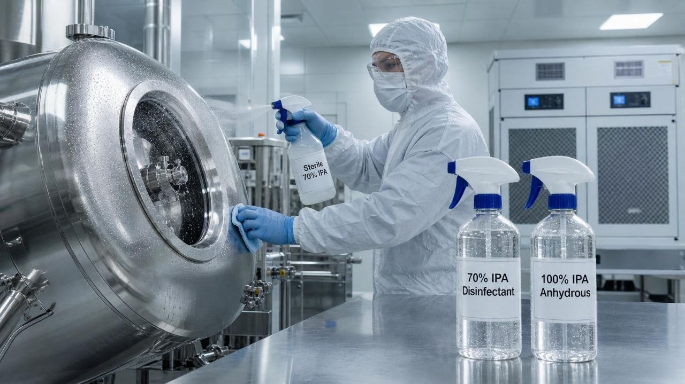

As a pharmaceutical production worker, my daily routine revolves around equipment setup, batch safety, and maintaining strict cleanroom standards. One of the most common tools in my daily routine is Isopropyl Alcohol (IPA). Whether I am spraying my gloves, wiping down a tablet coating pan, or prepping a machine outer panel, IPA is always within my reach.
However, working directly on the shop floor has taught me that higher concentration doesn't always mean better results. Knowing when to use 70% IPA versus 100% IPA is a critical part of my job.
1. My Go-To for Disinfection: 70% IPA
In our daily operation, 70% IPA is our primary line of defense for contamination control.
Why it works on my shift: The 30% purified water content is essential. When I spray down my gloves or wipe a stainless steel surface, 70% IPA doesn't flash off immediately. It stays wet long enough to penetrate microbial cell walls and kill vegetative bacteria.
Where I use it:
Glove sanitization before touching equipment interface panels or raw material contact surfaces.
Wiping down workbenches, stainless steel hoppers, and machine outer bodies using lint-free wipes.
Routine surface preparation across Cleanroom Grades A through D (using sterile-filtered 70% IPA for critical areas).
2. When I Reach for 100% (Anhydrous) IPA
I rarely use 100% IPA for general floor disinfection because it evaporates almost instantly. If a surface dries in five seconds, I cannot guarantee the required wet contact time set by our Quality Assurance team.
However, 100% IPA has specific technical uses on our floor:
Water-Sensitive Parts: Cleaning specialized mechanical parts or dies where any lingering water droplet could cause rust or interfere with production.
Sensors and Electronics: Wiping down de-energized electronic sensors or delicate control components where moisture must be completely avoided.
3. Key SOP Rules I Follow as an Operator
Respect Wet Contact Time: If our SOP requires a 1-minute wet contact time, the surface must stay visibly wet for that full minute. Spraying and immediately wiping it dry defeats the purpose.
IPA is Not a Sporicide: I keep in mind that neither 70% nor 100% IPA kills bacterial spores. For sporicidal coverage, I always rely on our scheduled disinfectant rotation program.
Safety First: IPA is highly flammable. I always wear approved PPE (gloves and eye protection), ensure cleanroom ventilation is running properly, and keep IPA containers away from heat or open ignition sources.
Sterile vs. Non-Sterile: For Grade A and B zones, I strictly verify that the bottle is validated Sterile 70% IPA with an intact seal before bringing it into the airlock.
Conclusion
On the manufacturing floor, compliance comes down to executing the right process with the right tool. For me as an operator, 70% IPA is my standard choice for daily sanitization, while 100% IPA is reserved for specialized, dry-cleaning tasks. Following our site SOPs ensures every batch we produce remains safe and compliant.
Disclaimer: This reflects operational guidelines for technical awareness. Always follow your site-specific approved SOPs and QA protocols.
October 11, 2026
My Perspective as an Operator: 100% vs. 70% IPA on the Pharma Floor
